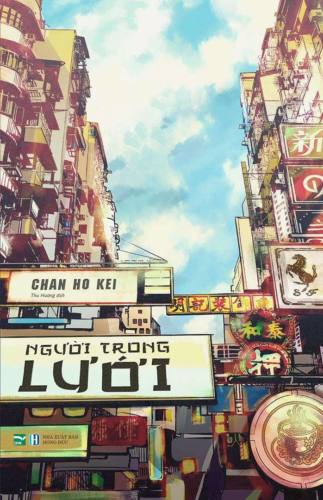

REVIEW SÁCH
Người trong lưới
Nhận xét của mình
Sau khi đọc xong 1367, vì quá ấn tượng tác phẩm của Chan Ho Kei nên mình đã tìm mua Người trong lưới (do cũng được nhiều người gợi ý). Đầu tiên về cảm nhận của mình, mình thấy rất hay, mình là người rất thích plot twist nhưng mà cái hay của cuốn này không chỉ ở những cái tình tiết bất ngờ bật ngửa ấy mà ở quá trình điều tra tìm ra người đã ép một cô bé tự sát vì những lời lăng mạ và xuyên tạc trên mạng internet. Với chủ đề về tội phạm internet, Người trong lưới mang đến cho người đọc những kiến thức mới mẻ mà không bị khó hiểu, đây là điểm rất thú vị ở cuốn này. Câu chuyện về sự đối đầu giữa những người thông thạo công nghệ và mạng lưới internet rất căng thẳng, và đến cuối cùng thì xuất hiện tình tiết không thể ngờ đến. Kết cục có hậu, truyện cũng có những tình tiết “đôi lứa” vui vẻ. Rất đáng để thử nếu bạn cũng hứng thú với tội phạm internet. Và sau này khi mình lướt mạng thì mình nhận ra là "người trong lưới" tức là con người bị mắc kẹt vào mặt tối củ mạng internet, bởi lưới có tiếng anh là net, mà khi diễn tả đến lưới, người ta dùng lưới để bắt một cái gì đó. Sau khi tự suy ra thì mình thấy khâm phục người dịch thiệt
🛍️ Tìm mua cuốn sách
Bạn có thể tham khảo giá tại các nhà sách online: